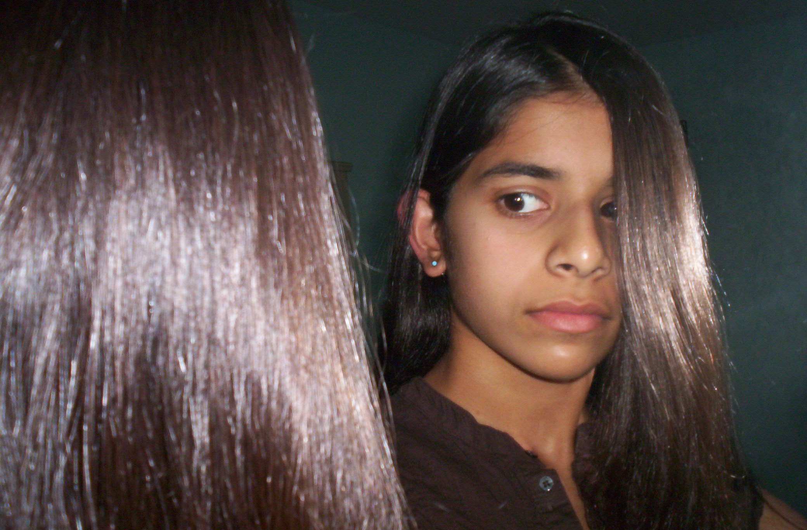

Mirror selfie I took when I was 14

When I was ugly with thick frame red glasses (like Ugly Betty)
Traditional saree for a Hindu wedding which was too long
Yellow saree for a Kerala wedding reception. I dressed up like Pikachu because the groom told me to get a Pikachu face tattoo. I also posed like Pikachu and did my hair like Pikachu. Indian women look good in yellow.
Rainbow stripe saree for my 30th birthday that looks like the dress from 13 Going on 30. Butterfly clips and a butterfly necklace that represents a caterpillar turning into a beautiful butterfly. Was surprised with a pink handbag to complete the look.
The hoodie I used to wear every day of high school no matter the weather.
Red lehenga for a Boscar (Bollywood Oscar) party. I picked it myself in India.
Me holding a snake at the Santa Cruz Beach Boardwalk.
Me at a picnic for the choir I used to be in.
Another picture from my 30th birthday. I wore a purple dress and pearl necklace.